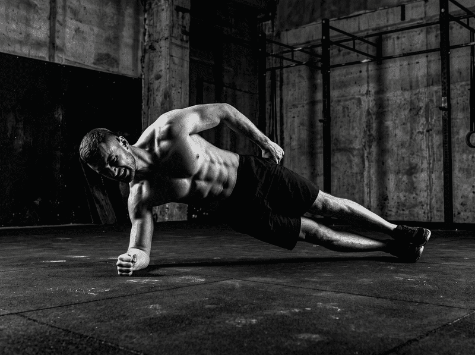
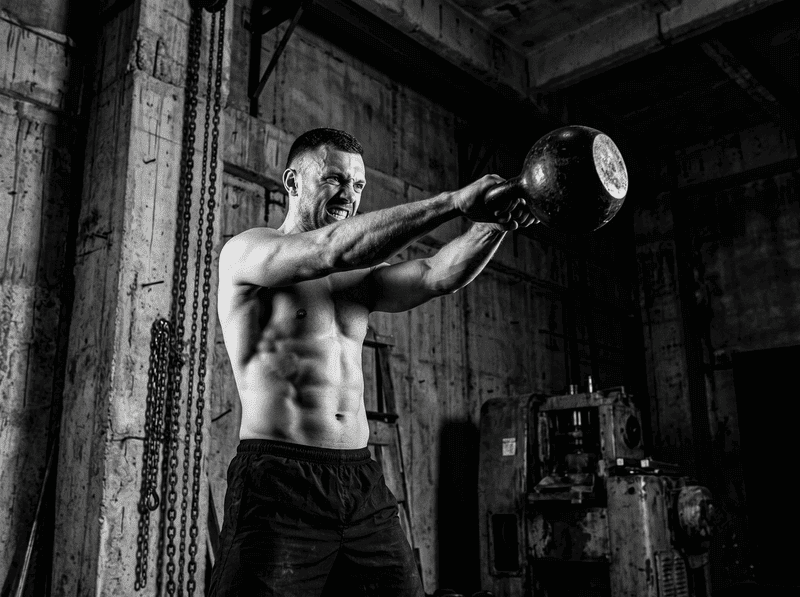

Зрительная иллюзия
Смотришь на профи, встаёшь перед зеркалом и думаешь, что делаешь так же. Без записи и разбора векторов со стороны ты работаешь вслепую.
Укрепляй спину и работай с железом дома без страха сорвать поясницу. Снимаешь подход — через полминуты видно, где теряется жёсткость корпуса и что исправить до следующего веса.
Проверить технику бесплатно
Смотришь на профи, встаёшь перед зеркалом и думаешь, что делаешь так же. Без записи и разбора векторов со стороны ты работаешь вслепую.
На видео — атлет с эталонной мобильностью суставов. Твой скованный офисный таз требует другой работы, о чём бесплатный ролик промолчит.
Ни один видеоблогер не остановит тебя в момент, когда в нижней фазе свинга у тебя предательски округлится поясница.
Сегодня смотришь рывок, завтра пресс. Без жёсткой программы и последовательности риск травмы максимальный.
Мы не клиника. Мы не лечим грыжи и протрузии. Мы ставим биомеханику движения, чтобы ты их не получил.
Никто не будет подавать тебе магнезию, кричать на ухо и страховать со спины. Дисциплину ты обеспечиваешь сам.
Никаких кураторов за 30 000 ₽ и ожидания ответа сутками. Алгоритм выдаёт сухие факты и углы через 30 секунд.
Здесь нет медитаций, ачивок со звёздочками и слов поддержки. Только разбор ошибок и программа на месяцы вперёд.

Поставь телефон сбоку на штатив или стул, или просто прислони к стопке книг. Сними планку или мах (свинг).

Около 30 секунд на анализ. Алгоритм покажет, проваливается ли таз и где спина теряет жёсткость.

Получаешь план под текущую фазу — не один и тот же день 28 раз. Объём и навыки растут по мере разбора CV.

12 недель: кор, антиротация, переноска. Боковая планка, bird-dog, скручивания — пока ИИ не подтвердит жёсткость, к гире не пускаем.

Hinge → свинг → заброс → жим → турлиш → рывок → complex. Каждая фаза открывается после 8+ разборов с оценкой ≥7. Не «выучил три упражнения и ушёл».
Трек «S» опирается на клиническую биомеханику Стюарта Макгилла (McGill Big 3). Трек «K» — на стандарты безопасной работы с весом школы StrongFirst. Без эзотерики и «авторских методик».

Человек устаёт и отвлекается. Компьютерное зрение оценивает углы сгибания суставов покадрово. Ошибка не пройдёт незамеченной — красная линия на экране, не ноющая поясница утром.
Нейросеть откалибрована на сотнях часов правильной техники. Она знает, как выглядит безопасное движение, и заблокирует переход к весам, если твои векторы с ним не совпадают.


Пытаешься скопировать движение, глядя в зеркало.
ИИ оцифровывает углы твоих суставов и ловит потерю формы.
Индикатор ошибки — ноющая поясница на утро.
Индикатор ошибки — красная линия на экране через 30 секунд.
Хаотичный выбор упражнений под настроение.
Строгий вектор: сначала 12 недель на кор, затем железо.
Сразу берёшь пудовую гирю и надеешься на лучшее.
Допуск к весу только после подтверждённой сдачи статики.
От 20 000 ₽ в месяц за базовый контроль тренера.
590 ₽. Дешевле магнезии.
Привязан к графику фитнес-клуба и пробкам.
Работаешь дома или в гараже. Нужны только гиря и телефон.
Первый разбор бесплатно · одна фаза корпуса
Начать работу496 ₽/мес · выход на свинг и заброс
Забрать три месяца332 ₽/мес · полная лестница K + сезоны
Зафиксировать год за 3 990 ₽